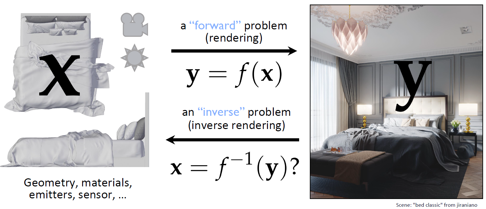
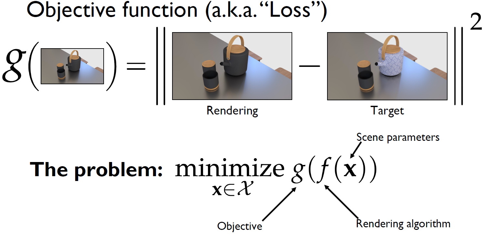
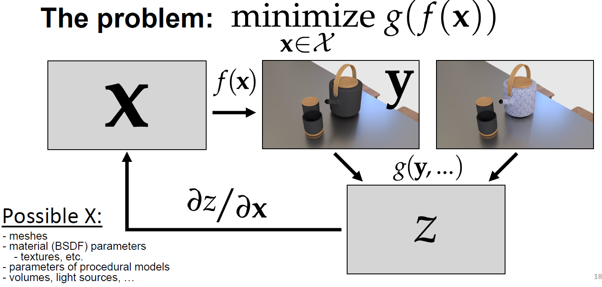
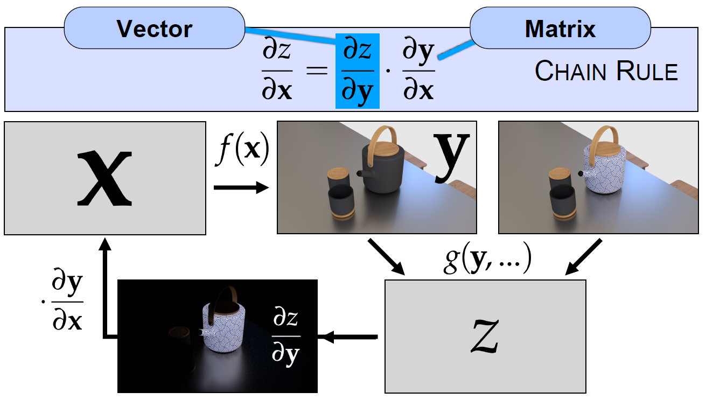
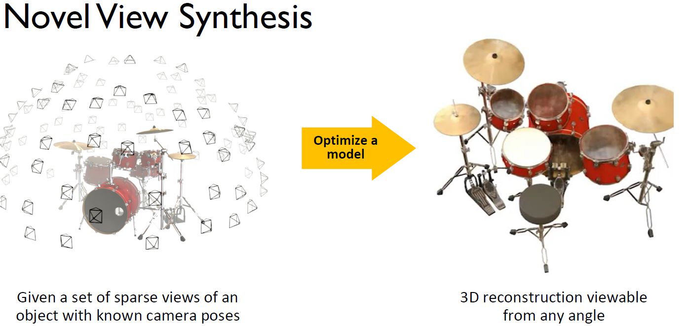
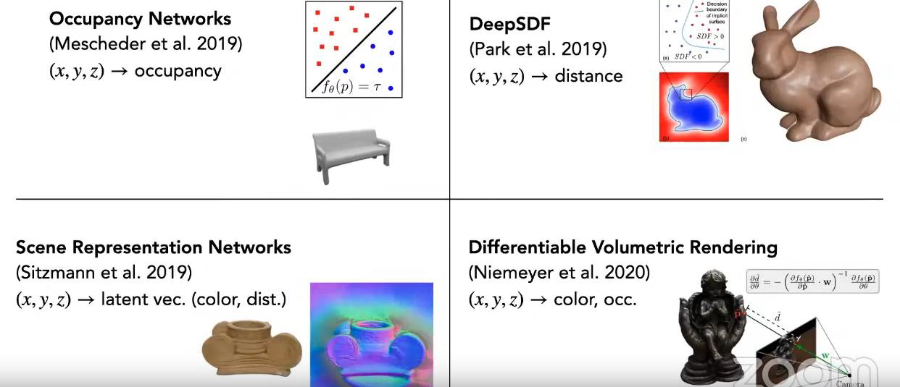

CS 8803 CGA - Neural Radiance Field
Differentiable Rendering
Forward vs. Inverse Rendering

Forward Rendering:
- This is the traditional computer graphics pipeline where we start with known scene parameters (marked as “x” in the image) such as:
- Geometry (3D models)
- Materials and their properties
- Light sources (shown by the sun icon)
- Camera/sensor parameters (shown by the camera icon)
- The rendering process (f(x)) then simulates how light interacts with these elements to produce a final 2D image (y)
- This is the typical approach used in video games and 3D animation, where we know all the scene parameters and want to generate realistic images.
Inverse Rendering:
- This is the reverse process () where we start with a 2D image (y) and try to reconstruct the original 3D scene parameters (x)
- Given a photograph or image, inverse rendering attempts to determine:
- The 3D geometry of objects
- Material properties
- Lighting conditions
- Camera parameters
- This is a much more challenging problem because:
- Multiple different 3D scenes could produce the same 2D image
- The process involves solving complex mathematical equations backwards
- There can be ambiguity in separating lighting from material properties
The image shows this using a bedroom scene example:
- Forward rendering: We start with a 3D model (left) and render it to get the final image (right)
- Inverse rendering: We start with the photo (right) and try to reconstruct the 3D scene parameters (left)
Differentiable Rendering
Integrating physics-based rendering into machine learning & probabilistic inference pipelines (take use of the mature forward rendering pipeline to facilitate inverse rendering).
- Utilizing image loss (provided by a volume path tracer) to regularize training
- Use the trained encoder to solve inverse problems during testing
Differentiable rendering is still a forward rendering process (going from 3D scene parameters to 2D images). However, it makes the entire rendering pipeline differentiable - meaning we can compute how small changes in input parameters affect the final image. Each step in the rendering process (geometry transformations, material interactions, lighting calculations) becomes differentiable. Differentiable rendering makes inverse rendering more tractable through optimization.



In the figurer above,
x - Scene Parameters:
- These are the input parameters that define the 3D scene
- Includes geometry, materials, lighting, camera parameters
- In the example shown, it would include the 3D model information for the teapot and cup
y - Rendered Image:
- This is the output of the forward rendering process f(x)
- Shows two versions of the rendered teapot scene - one with a solid dark material and one with a patterned material
- Represents the 2D image produced by the renderer
z - Loss/Objective Function:
- This is some measurement or metric computed from the rendered images
- Could be comparing the rendered image to a target image
- Might measure specific properties like lighting consistency or material appearance
- The function g(y,…) computes this metric from the rendered images
The chain rule shown at the top (∂z/∂x = ∂z/∂y · ∂y/∂x) illustrates how gradients flow backward through the pipeline:
- : How changes in the rendered image affect the loss
- : How changes in scene parameters affect the rendered image
- : The final gradient used to optimize scene parameters
This chain rule formulation is what makes the rendering pipeline “differentiable” and allows for optimization of scene parameters through gradient descent.

Shape Representation for Differentiable Rendering
- Meshes
- Idea: use a mesh to track the shape during optimization
- Benefit: Small memory footprint (no need to store information outside surface)
- Drawback:
- The optimization process is difficult to differentiate
- The number of triangles needs to change during optimization
- The mesh connectivity needs to change during optimization
- Voxel Grids
- Voxels are 3D arrays that encode occupancy
- Size:
(C: channels, D: depth, H: height, W: width) - Benefits:
- extremely simple
- easy to optimize
- Drawbacks:
- Cubic in terms of memory/storage complexity
- Octrees / Sparse voxels
- Voxels wastefully encode empty space
- Idea: only represent occupied voxels
- Benefits:
- More memory efficient
- Drawbacks:
- Geometry processing operations become tricky (e.g., merging objects, intersection tests, etc.)
- Neural Field (SDF)
- Use neural network to replace grid
- Idea:
- Encode continuous SDF values in an MLP
- Benefits:
- Memory efficient, differentiable
- Drawbacks:
- Difficult to put color and lighting effects on the object surface
- Difficult to solve the inverse rendering problem from input images
In fact, neural fields are great for learning 3d representations.

The key question is: what field quantity do we want to encode in a neural network?
- Neural Color Field?
- Idea: We want to encode the object appearance (in addition to its shape), in particular, its color, into the neural network
- Drawback: But this is still problematic, because color on the object surface can change due to camera angle
Neural Radiance Field
- Idea: Combine volumetric rendering and neural network by learning the radiance field from images.
- Instead of naively learning the color on object surface, we choose to learn a volumetric radiance field, and use ray tracing to render this field as participating media.
- This ray tracing process is differentiable, which can be easily connected to any neural network training process.
Radiance field
- Input: x, y, z coordinates (3D) and a direction (2 spherical coordinates) (A viewing direction, which is a unit vector in 3D space. A unit vector in 3D can be described using spherical coordinates . Azimuthal angle : Measures the rotation around the vertical axis (like longitude on Earth). Polar angle (): Measures the angle from the vertical axis (like latitude on Earth))
- Output: R, G, B colors, scalar volume density parameter
- Compute radiance via volume rendering
- Volume rendering: accumulate color and density along a ray to compute the final pixel value in an image. The idea is:
- A ray is cast through the scene, and samples are taken along the ray.
- Each sampled point contributes some color and opacity (density).
- The final color is computed by integrating (accumulating) these values along the ray.
- Differentiate loss w.r.t. each parameter in ( represents the parameters of the neural network that models the radiance field).
- Update via gradient descent
- Volume rendering: accumulate color and density along a ray to compute the final pixel value in an image. The idea is:
- Use an MLP to “memorize” and “interpolate”
- MLP: Multi-Layer Perceptron. It is a type of feedforward neural network that consists of multiple layers of neurons. It is fully connected—each neuron in one layer is connected to every neuron in the next.
- MLP “memorizes” radiance at locations where GT is available
- MLP “interpolates” these memorized values across neighbors
Differentiable Volumetric Rendering
Remember that in volumetric rendering, we
- Let denote samples along the current ray being cast into the scene (for ).
- Let denote the color of ray .
- We have , where denotes the transmittance.
Then, we can approximate the integral by subdividing the ray into small segments. We assume volume density and color are roughly constant within each segment.
Now we take a random point for each segment. We use a stratified (分层的) sampling approach where we partition into N evenly-spaced bins and then draw one sample uniformly at random from within each bin.
Also, recall the quadrature estimation of ray color.
.
The left part of the equation shows continuous probability, while the right part shows discrete probability.
And we have (which is differerntiable w.r.t. (关于) ) with .
In fact, we can see the estimation of the expected color as a kind of weighted sum of , where and are “rendering weights” — probability distribution along the ray (continuous and discrete, respectively).
Positional Encoding
- Naive coordinate-based MLPs (i.e., x, y, z directly passed as input) struggle to capture finer, high-frequency details.
- Rahman et al. (ICML 2018) show that MLPs have an inherent low-frequency bias.
- NN outputs cannot have local fluctuations without affecting global behavior.
- Fortunately, they also develop a solution — positional encoding (a.k.a. Fourier features).
Positional encoding to the rescue
- Idea: Map inputs to higher dimensions
- Use high-frequency mappings on inputs before feeding them into an MLP
- Easy-to-use, differentiable function banks are preferred (e.g., sines and cosines)
- Positional encoding:
- Map an input to its high-dimensional encoding
- In NeRF, sines and cosines (and their powers) are employed:
Limitation of NeRF
- Training and inference time are extremely slow (about 30 seconds for a 128 x 128 image, in the original 2019 paper).
- Assumes known camera intrinsics and extrinsics.
- Scenes are assumed static (no moving objects).
- Relighting is not possible (lighting is “baked” into the scene).
- Generalization and/or extrapolation are not supported (Extrapolation refers to predicting values beyond the range of what was seen in training data. NeRF is good at interpolation (rendering unseen views within the training range), but it struggles with extrapolation).